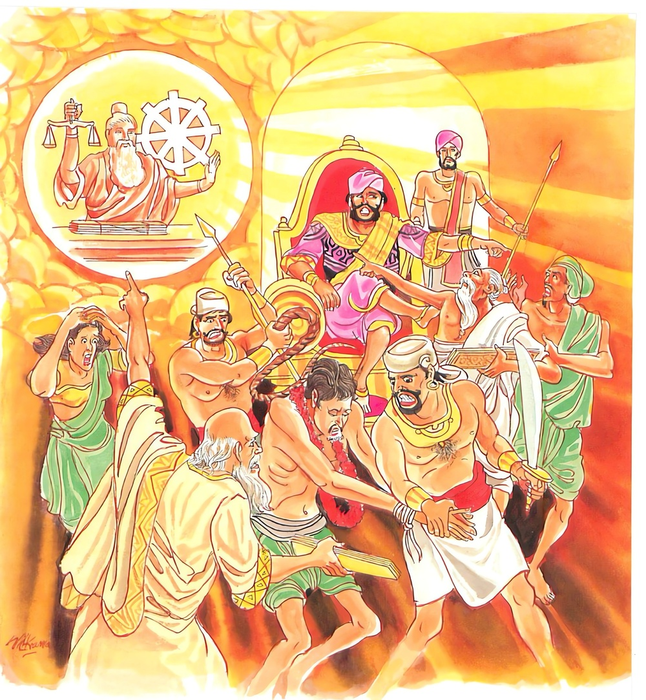
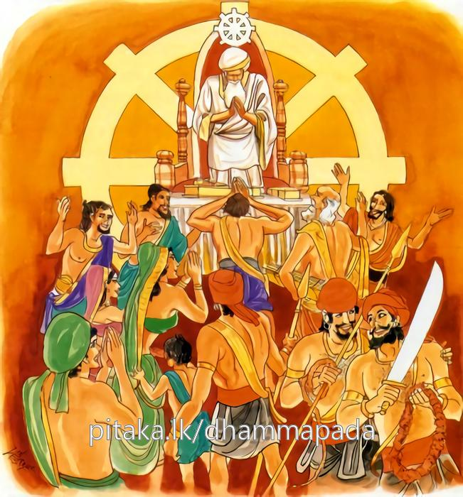

19-1 ධර්මයෙහි පිහිටියෝ
මෙම කතාව ධම්මපද අටුවාවෙන් ද කියවන්න.
න තෙන හොති ධම්මට්ඨො යෙනත්ථං සාහසා නයෙ
යො ච අත්ථං අනත්ථඤ්ච උභො නිච්ඡෙය්ය පණ්ඩිතො.
යම් කරුණෙකින් විනිශ්චය කටයුතු වූ අර්ත්ථය (විනිශ්චය කොට දත යුතු ජයපරාජය) (ඡන්දාගති ආදියෙහි පිහිටා) සාහසනයෙන් (බොරු කීමෙන්) දිනුම පරැදුමටට පමුණුවා ද, එයින් විනිශ්චය ධර්මයෙහි පිහිටියේ නම් නො වෙයි. නුවණැති යමෙක් විනිශ්චය කටයුතු වූ භූත වූ කාරණය ද අභූත වූ කාරණය ද යන දෙක විනිශ්චය කෙරේ ද (නියම කොට කියා ද),

අසාහසෙන ධම්මෙන සමෙන නයතී පරෙ
ධම්මස්ස ගුත්තො මෙධාවී ධම්මට්ඨො’ති පවුච්චති.
අසාහයෙන් (නිබොරු තෙපුලෙන්), විනිශ්චය ධර්මයෙන්, අනුන් ජයපරාජයට පමුණුවා ද, විනිශ්චය ධර්මය විසින් රක්නා ලද නුවණැති පුරුෂ තෙම ධර්මස්ථ යැ යි (විනිශ්චය ධර්මයෙහි පිහිටියේ යැ යි) කියනු ලැබේ.

භික්ෂූන් වහන්සේලා සැවැත් නුවර උතුරු වාසල් දොර සමීපයෙහි ගමෙක පිඬු සිඟා ගෙණ එන්නෝ නුවර මැදින් අවුත් විහාරයට පිවිසෙන්නෝ ය. එසේ පිවිසෙන එක් දවසෙක වලාකුල් නැගී වසින්නට වන. භික්ෂූන් වහන්සේලා වැස්සට බියෙන් ඉදිරියෙහි තුබූ අධිකරණශාලාවකට ගොඩ වූහ. එහි දී අල්ලස් ගෙණ හිමියන් අහිමියන් කරමින් වරද කළවුන් නිදහස් කරමින් නඩු විසඳන මහාවිනිසකරුවන් දැක “අනේ; මේ විනිසකරුවෝ නො දැහැමි යි, මොවාහු දැහැමින් යුක්තියෙහි පිහිටා නඩු විසඳති යි අපි මෙතෙක් සිතා ගෙණ සිටියෙමු, අධිකරණශාස්ත්රය නො දන්නා අපටත් යුක්තිය මේ ය යි දැනෙද්දී මොවුනට යුක්තිය නො දැනෙන්නට හේතුවෙක් නැත, මොවුන් අල්ලසට යටත් ව නො දැහැමි ව නඩු විචාරති” යි සිතා වැසි පායා ගිය කල්හි විහාරයට ගොස් බුදුරජුන් වෙත එළැඹැ වැඳ එකත් පස්හි හි “මහාවිනිසකරුවෝ යුක්තිය පසෙක තබා රාජධර්මයට විරුද්ධ ව නඩු විචාරති”යි දන්වා සිටියහ. එකල්හි බුදුරජානන් වහන්සේ “මහණෙනි! ඡන්දාදීන්ගේ වශයට ගොස් සැහැසි ව නඩු විසඳන්නෝ ධර්මයෙහි පිහිටියෝ නො වෙති, අපරාධය, වරද මැනැවින් දැන අපරාධය වරද සොයා බලා රාජධර්මයට එකඟව අපරාධයට අනුරූප ව නො සැහැසි ව විනිශ්චය කරන්නෝ ම ධර්මයෙහි පිහිටියෝ වෙත්” යි වදාරා මේ ධර්මදේශනාව කළ සේක.
න තෙන හොත ධම්මට්ඨො යෙනත්ථං සහසා නයෙ,
යො ච අත්ථං අනත්ථං ච උභො නිච්ඡෙය්ය පණ්ඩිතො.
.
අසාහසෙන ධම්මෙන සමෙන නයතී පරෙ,
ධම්මස්ස ගුත්තො මෙධාවී ධම්මට්ඨොති පවුච්චතී ති.
යම් කරුණෙකින් විනිශ්චය කටයුතු අර්ත්ථය බොරුවෙන් විනිශ්චයට පමුණුවා ද, එපමණෙකින් විනිශ්චයධර්මයෙහි පිහිටියේ නො වේ. නුවණැත් යමෙක් වනාහි විනිශ්චය කටයුතු වූ සත්යකාරණය ද අසත්යකාරණය දයන දෙ කරුණ නිශ්චය කෙරේ ද.
නිබොරු බසින් විනිශ්චයධර්මයෙන් අපරාධයට අනුරූප පරිදි ම ජය - පරාජයට පමුණුවා ද ධර්මයෙන් රක්නා ලද (ඒ) නුවණැති පුරුෂ තෙමේ විනිශ්චයධර්මයෙහි පිහිටියේ ය යි කියනු ලැබේ.
න තෙන හොති ධම්මට්ඨො යෙන අත්ථං සහසා නයෙ = යම් කරුණෙකින් විනිශ්චය කටයුතු වූ අර්ත්ථය බොරුවෙන් විනිශ්චයට පමුණුවා ද එපමණෙකින් ධර්මයෙහි පිහිටියේ නො වේ.
යො ච අත්ථං අනත්ථං ච උභො නිච්ඡෙය්ය පණ්ඩිතො = නුවණැති යමෙක් වනාහි විනිශ්චය කටයුතු වූ සත්යකාරණය ද අසත්යකාරණය ද යන දෙකරුණ නිශ්චය කරන්නේ ද.
අධිකරණවිනිශ්චය සඳහා අසුන් අරා සිටි අධිකරණනායක තෙමේ විනිශ්චය කළයුතු අධිකරණයක් ඡන්ද - දෝස - භය - මෝහ යන සතර අගතියෙන් බැඳී සතර අගතියෙහි පිහිටා බෙරුවෙන් හිමියන් අහිමියන් කොට වරද නිවරද කොට විනිශ්චය කෙරේ නම්, විසඳා නම්, ඔහු, ඒ අධිකරණනායකයා ඒ විනිශ්චය මාත්රයෙන් යුක්තිධර්මයෙහි පිහිටියේ නො වේ. එහි ඇතැම් අධිකරණනායකයෙක් ඡන්දයෙන් අගතියට ගොස් “මේ මාගේ නෑ, මේ මාගේ මිතුරු”යි ගෙණ නෑයා හෝ මිතුරා නො හිමිදැයට හිමි කරන්නේ ය. බොරුවෙන් දිනවන්නේ ය. තවත් එකෙක් ද්වේෂයෙන් දුෂ්ට ව අගතියට ගොස් “මේ මාගේ සතුරු, මූ මට ගැහැට කෙළේ ය” යි ගෙණ සතුරා අයත් දැය ඔහුට අහිමි කරන්නේ ය. බොරු කියා සතුරා පරද වන්නේ ය. තවත් එකෙක් බියපත් ව අගතියට ගොස් පොහොසතුන් පිළිබඳ අධිකරණයන්හිදී නො හිමි වූ දැයට පොහොසතුන් හිමියන් කරන්නේ ය. ඔවුන් නො හිමිදැයෙහි හිමියන් නො කෙළෙම් නම්, එරෙහි ව එති යි ගෙණ දුප්පතුන් අයත් දැය පොහොසතුන් හිමියන් කරන්නේ ය. බොරු පද කියා පරද වන්නේ ය. තවත් එකෙක් මෝහයෙන් මූඪ ව අගතියට ගොස් අල්ලස් ගෙණ හිමියා අහිමියා කරන්නේ ය. බොරු කියා පරද වන්නේ ය. සමහර පැවිද්දෝ ද අගතියට බැඳී බොරු, නිබොරු කොට, කළ යුතු විනිශ්චය, ධර්මවිනය ලෙසින් නො කොට, අධර්මයෙන් අවිනයයෙන් අධිකරණවිනිශ්චය කරන්නෝ ය. මෙසේ අගතියට බැඳී සිටුනා ගිහි පැවිද්දෝ ධර්මයෙහි පිහිටියෝ නො වෙත්.
නුවණැත්තෝ වනාහි සත්ය - අසත්ය දෙක යුක්තියට අනුව විනිශ්චය කොට අපරාධය ලෙසින් උනුන් ජයපරාජයට පමුණු වන්නේ ය.
අසාහසෙන ධම්මෙන සමෙන නයතී පරෙ = නිබොරු බසින් විනිශ්චයධර්මයෙන් අපරාධය ලෙසින් අන්හු ජය පරාජයට පමුණුවා ද.
ධම්මස්ස ගුත්තො මෙධාවී ධම්මට්ඨො ඉති වුච්චති = ධර්මයෙ විසින් රක්නා ලද ඒ නුවණැති පුරුෂ තෙමේ විනිශ්චයධර්මයෙහි පිහිටියේ ය යි කියනු ලැබේ.
ඇත්ත කියා විනිශ්චයධර්මයෙහි පිහිටා විනිශ්චයධර්මය ලෙසින් කළ අපරාධය මැනැවින් සොයා බලා එයට අනුරූප පරිදි මෙරමා ජයපරාජයට පමුණු වන පුරුෂ, ධර්මයෙන් රැකුනේ යුක්තිධර්මයෙහි පිහිටා සිටියේය.
ධම්මට්ඨ නම්: යුක්තිධර්මයෙහි පිහිටියේ ය. සහසා යන්නෙන් මෙහි මුසාවාදය කියැවෙන්නේ ය. අත්ථ නම්: මෙහි සත්යය යි අනත්ථ නම්: අසත්යය යි. ඒ සත්ය - අසත්ය දෙක උභො යන්නෙන් ගැණේ. උභශබ්දය ලඞ්ගත්රයෙහි සමාන රූප ඇත්තේ ය. බහුවචනයෙහි ය. ද්විශබ්දාර්ත්ථවාචී සර්වනාමයෙකි. පණ්ඩිතො යනු කියන ලද්දේ ය. [1] අසහාසෙන = සත්යවචනයෙන් ධම්මෙන = අගතියෙන් තොර වූ විනිශ්චයෙහිලා ධර්මවිනයෙහි හා පෞරාණික රාජධර්මයෙහි එන යුක්තියෙන්, සමෙන = අපරාධයනට අනුරූප පරිද්දෙන් යන අරුත්: ධම්මස්ස ගුත්තො = විනිශ්චය ධර්මයෙන් රැකුනේය. ධර්මෞජස් ප්රඥායෙන් යුක්ත වූයේ මෙධාවී නම්. [2]
ධර්මදේශනාවගේ අවසානයෙහි බොහෝ දෙන සෝවන් ඵලාදියට පැමිණියාහු ය.
විනිශ්චයමහාමාත්ය වස්තුව නිමි.